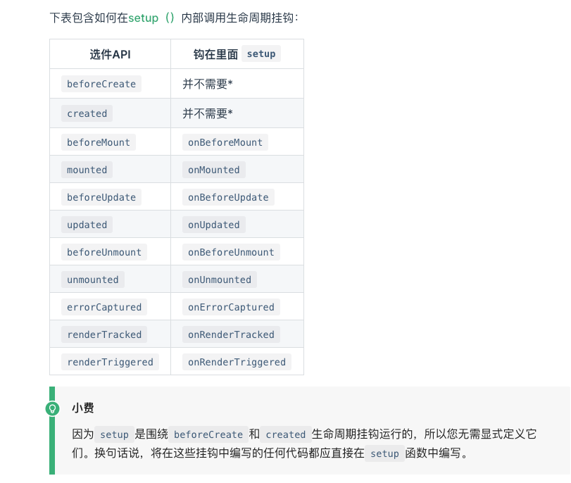

Vue3 学习手册
setup
内部定义变量 需要 实际操作
``` import {ref} from 'vue' export default {
setup(props ,context) { // 注意 this 里面setup()，this不会对当前的活动实例的引用自setup()其他组件选项都解决了之前被调用，this里面setup()会表现得很不同于this其他选项。setup()与其他Options API一起使用时，这可能会造成混乱。
// setup 执行时 组建尚未建立 so 只能访问 props，attrs,slots, emit 不能访问 data computed methods
//props 是响应式的 在没有给定默认值的情况下不能用来结构
// context {attrs ,slots, emit}
const data = ref(0)
return {
data ,// 在模版中你使用时不需要 data.value 引用ref 会自动解包
}
}
}
```
- 生命周期
